All EDA computed on the training split only — no test-set leakage. See eda_*.csv / eda_*.png files.
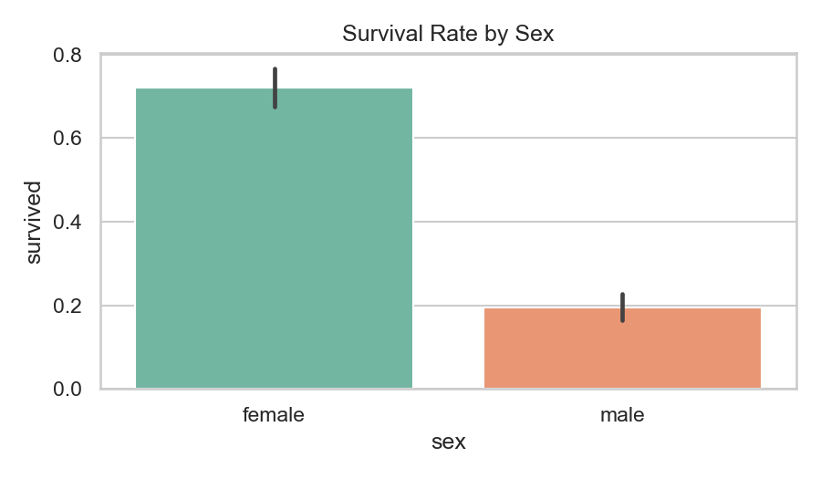
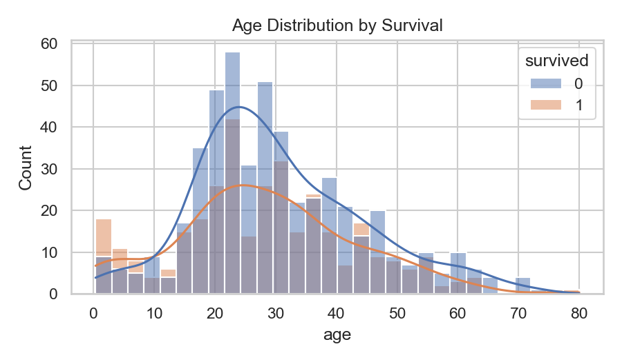
All 15 classifiers share identical feature engineering and preprocessing from the reference pipeline. Only the final estimator changes. Overfit gap = Train AUC − CV AUC; values > 0.05 shown in red.
| Model | ROC-AUC | F1 | Avg Precision | Bal. Accuracy | Overfit Gap | CV Time (s) |
|---|---|---|---|---|---|---|
| GradientBoosting | 0.859 | 0.736 | 0.832 | 0.788 | 0.129 | 1.35 |
| XGBoost | 0.859 | 0.742 | 0.827 | 0.791 | 0.116 | 2.43 |
| 🏆 RandomForest | 0.857 | 0.735 | 0.826 | 0.785 | 0.077 | 1.8 |
| MLP | 0.855 | 0.717 | 0.819 | 0.774 | 0.022 | 0.53 |
| ExtraTrees | 0.852 | 0.733 | 0.822 | 0.783 | 0.061 | 1.29 |
| LDA | 0.846 | 0.736 | 0.818 | 0.787 | 0.015 | 0.24 |
| LogisticRegression | 0.844 | 0.742 | 0.815 | 0.790 | 0.022 | 0.24 |
| AdaBoost | 0.841 | 0.725 | 0.801 | 0.778 | 0.024 | 0.46 |
| SVM_RBF | 0.838 | 0.735 | 0.793 | 0.785 | 0.048 | 0.66 |
| QDA | 0.826 | 0.700 | 0.747 | 0.756 | 0.030 | 0.27 |
| KNN | 0.825 | 0.698 | 0.744 | 0.758 | 0.174 | 0.43 |
| DecisionTree | 0.825 | 0.731 | 0.750 | 0.779 | 0.088 | 0.16 |
| SGD | 0.809 | 0.706 | 0.750 | 0.760 | 0.039 | 0.27 |
| GaussianNB | 0.774 | 0.593 | 0.643 | 0.581 | 0.021 | 0.17 |
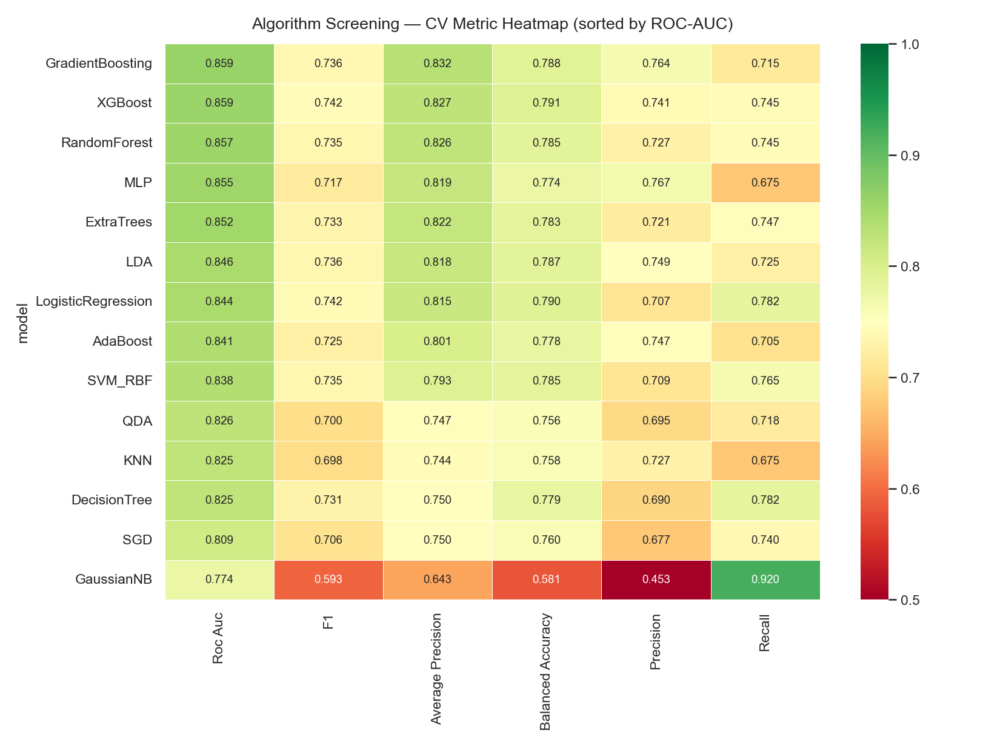
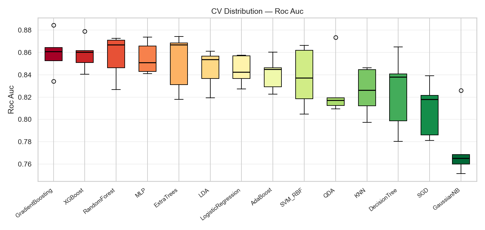
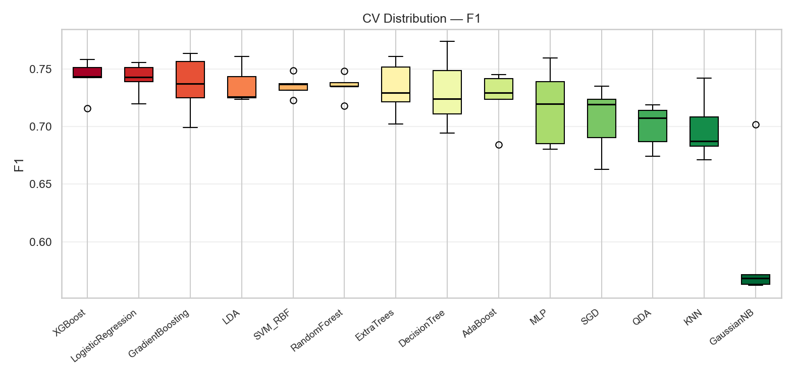
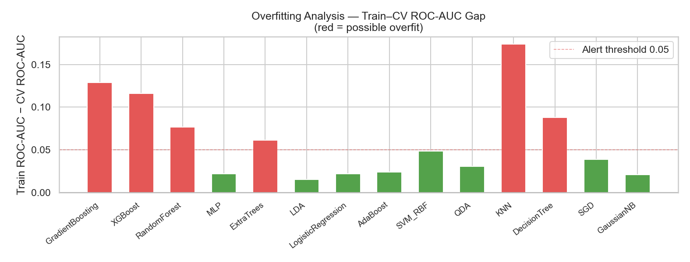
Friedman χ² test (global H₀: all models perform equally) + pairwise Wilcoxon signed-rank vs champion with Bonferroni correction (α = 0.05).
Friedman: χ² = 40.34916446789795, p = 0.00012143461634027679, result = Significant
Champion: GradientBoosting
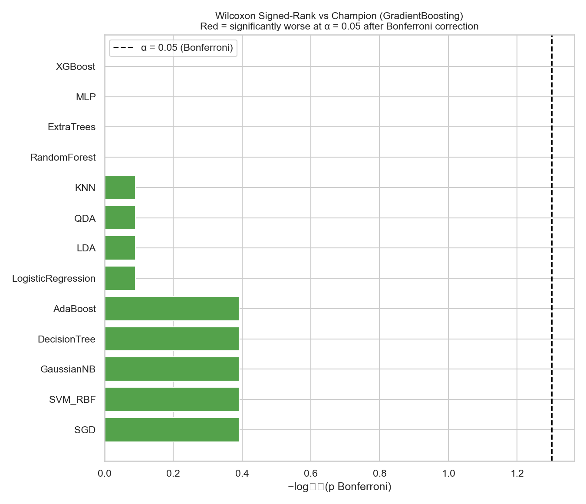
RandomizedSearchCV with 40 iterations per model on the same 5-fold CV. Only the top-3 screening models are tuned — cost-efficient industry practice.
SoftVoting and Stacking (meta-learner = LogisticRegression) built from the tuned top-3 estimators.
Threshold per model via Youden's J (maximises sensitivity + specificity). 10 metrics: ROC-AUC (discrimination), Avg Precision (imbalance-robust), F1 (harm-balanced), Brier ↓ (calibration), MCC (class-imbalance robust), Cohen's κ (chance-corrected).
| Model | ROC-AUC | Avg Prec | F1 | Precision | Recall | Bal Acc | Brier↓ | MCC | Kappa | TP | TN | FP | FN | Threshold |
|---|---|---|---|---|---|---|---|---|---|---|---|---|---|---|
| 🏆 RandomForest | 0.8989 | 0.8769 | 0.796 | 0.7921 | 0.8 | 0.8352 | 0.122 | 0.6691 | 0.6691 | 80 | 141 | 21 | 20 | 0.5032 |
| SoftVoting | 0.8969 | 0.872 | 0.8063 | 0.8462 | 0.77 | 0.8418 | 0.118 | 0.6975 | 0.6956 | 77 | 148 | 14 | 23 | 0.5367 |
| Stacking | 0.8968 | 0.871 | 0.802 | 0.8144 | 0.79 | 0.8394 | 0.1156 | 0.683 | 0.6828 | 79 | 144 | 18 | 21 | 0.4587 |
| XGBoost | 0.8937 | 0.8645 | 0.7914 | 0.8506 | 0.74 | 0.8299 | 0.1211 | 0.6806 | 0.6766 | 74 | 149 | 13 | 26 | 0.593 |
| GradientBoosting | 0.8925 | 0.8589 | 0.8061 | 0.8229 | 0.79 | 0.8425 | 0.1183 | 0.6907 | 0.6903 | 79 | 145 | 17 | 21 | 0.4763 |
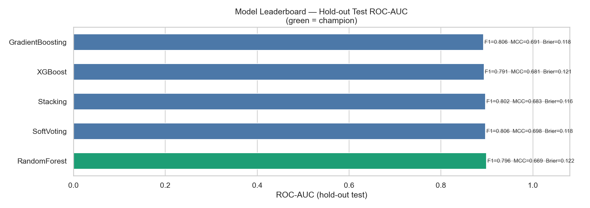
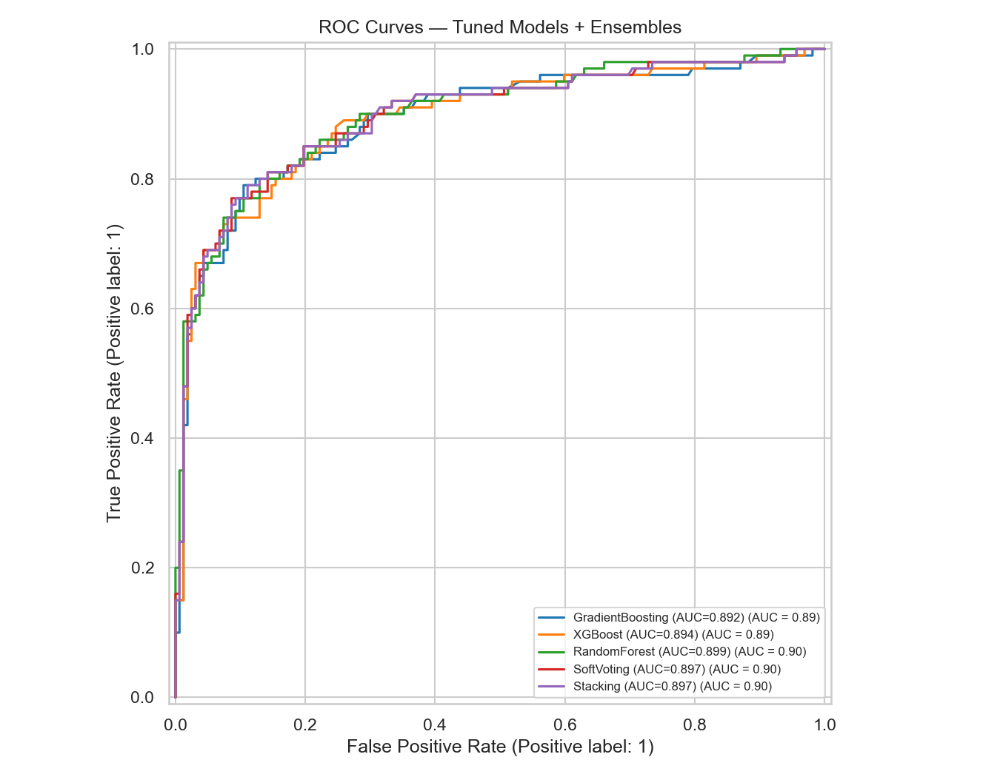
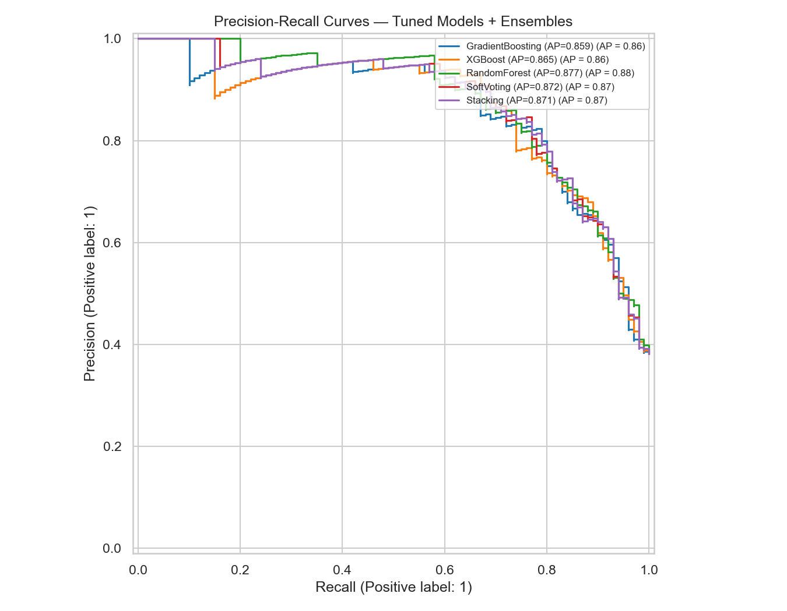
Reliability diagrams. Lower Brier score = better calibrated predictions.
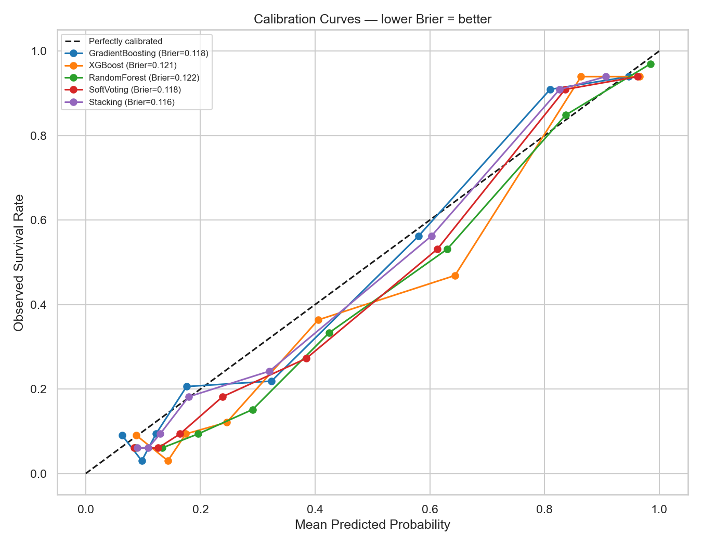
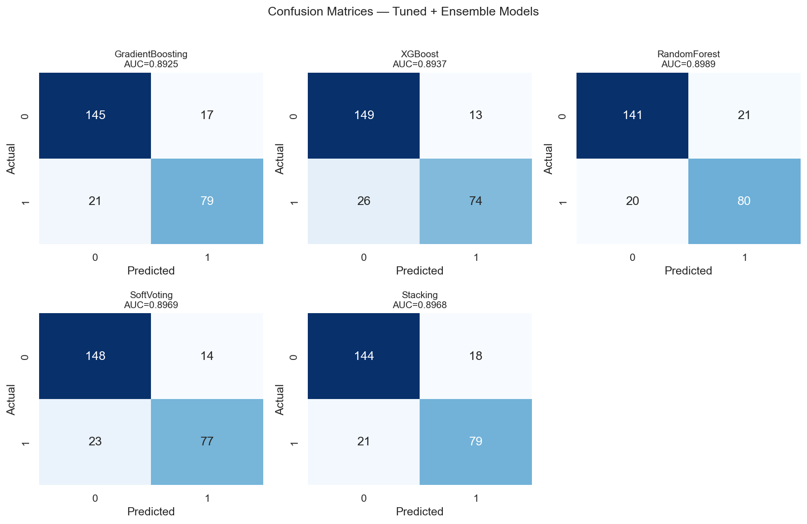
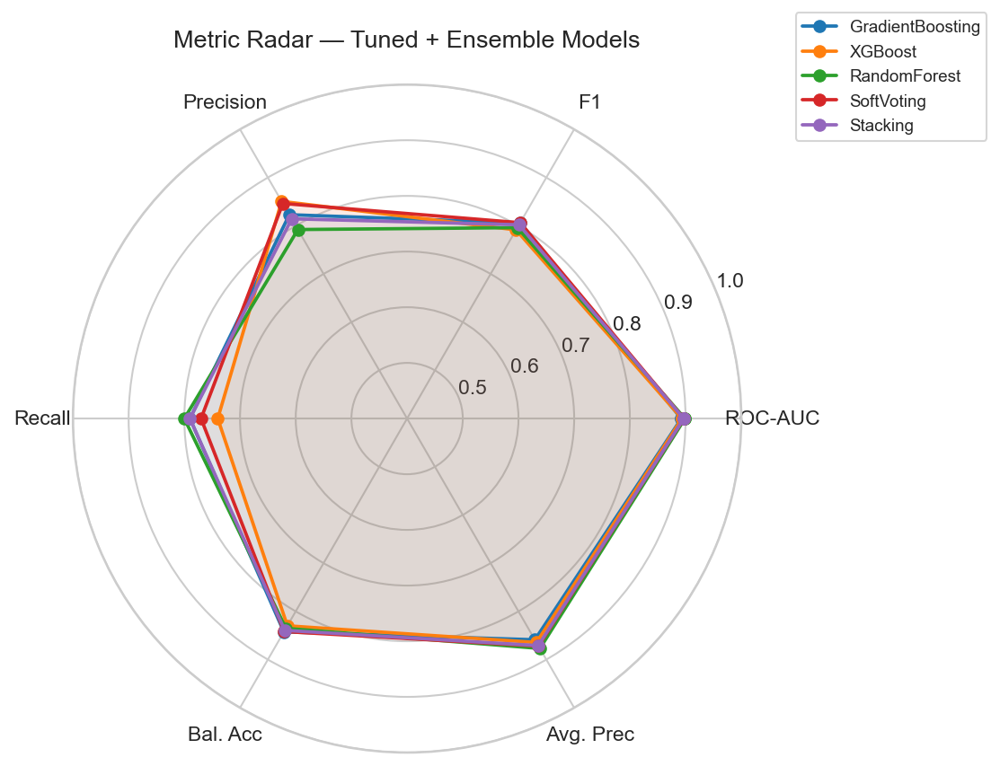
Global feature importance via SHAP. Bar = mean |SHAP value|. Beeswarm = feature value direction (red = high, blue = low).
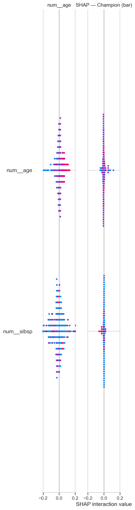
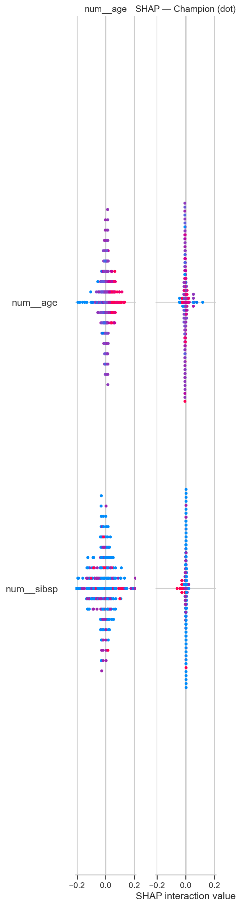
Disaggregated metrics for sex, pclass, and age_group. F1 gap = subgroup F1 − overall F1. Alert when gap < −0.10.
⚠ 2 subgroup(s) have F1 gap > 0.10
| Group | Value | N | F1 | ROC-AUC | F1 Gap |
|---|---|---|---|---|---|
| sex | female | 94 | 0.9091 | 0.8867 | +0.1131 |
| sex | male | 168 | 0.4255 | 0.7533 | -0.3705 |
| pclass | 1 | 74 | 0.8 | 0.8455 | +0.0040 |
| pclass | 2 | 57 | 0.9804 | 0.9814 | +0.1844 |
| pclass | 3 | 131 | 0.6333 | 0.8067 | -0.1627 |
| _age_group | child | 18 | 0.8182 | 0.9383 | +0.0222 |
| _age_group | adult | 128 | 0.7872 | 0.8714 | -0.0088 |
| _age_group | middle_aged | 47 | 0.8205 | 0.9473 | +0.0245 |
| _age_group | unknown | 54 | 0.7333 | 0.8938 | -0.0627 |
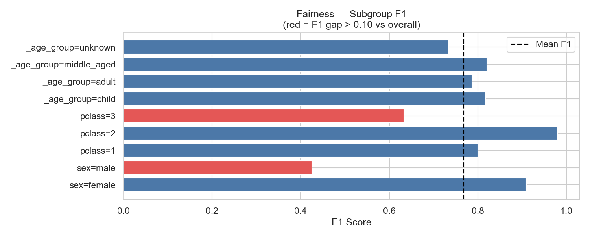